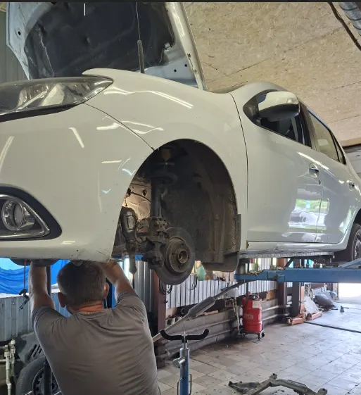
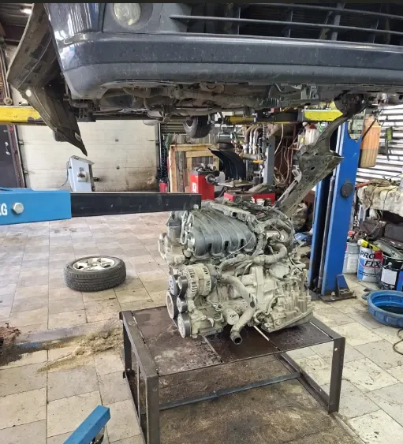
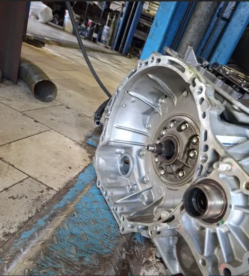

Автосервис МастерАвто
Легковой автосервис, обслуживание автомобильных климатических систем, ремонт бензиновых двигателей, ремонт ходовой части автомобиля, ремонт выхлопных систем, ремонт стартеров и генераторов, компьютерная диагностика, шиномонтаж
- Рейтинг 5 в 2ГИС по 91 оценке, 58 отзывов
- Немировича-Данченко, 120а к1, 09:30–20:00 по записи, пн–сб
- Оплата наличными и переводом с карты
Что рядом с ремонтом
Входит
- Диагностика, ходовая, двигатель и выхлоп в одном месте
- Помогают с запчастями, по отзывам клиентов
- Объясняют и показывают, что сломалось, по отзывам клиентов
- Работают с 15 марками: Toyota, Ford, Honda, Hyundai, Kia, Nissan и другими
- 7 парковок рядом
Отдельно, если нужно
- Итоговая цена ремонта зависит от автомобиля и объёма работ
- Стоимость ремонта называют после диагностики
Услуги и цены
Точную стоимость называют после диагностики.
Диагностика и ходовая
- Компьютерная диагностикауточнить
- Ремонт ходовой частиуточнить
- Ремонт пневмоподвескиуточнить
- Шиномонтажуточнить
Двигатель и обслуживание
- Ремонт бензиновых двигателейуточнить
- Замена сцепленияуточнить
- Замена маслауточнить
- Ремонт выхлопных системуточнить
- Ремонт стартеров и генераторовуточнить
- Обслуживание климатических системуточнить
Цен на карточке в 2ГИС нет – уточняйте при записи.
Четыре шага от записи до выдачи
- 01
Записались
Позвонили или написали в WhatsApp, назвали марку и что нужно.
- 02
Диагностика
Мастер смотрит автомобиль, показывает, что сломалось, и называет стоимость.
- 03
Ремонт
Делаем работу, пока вы занимаетесь своими делами.
- 04
Выдача
Забираете машину, рассказываете, что понравилось.



Что говорят клиенты
Покажут и объяснят
«Расскажут, покажут и объяснят на пальцах» – из отзыва в 2ГИС.
Без лишнего
«Всегда честно советуют, как лучше поступить, без навязывания лишних услуг» – из отзыва в 2ГИС.
Быстро
«Приезжал на замену сцепления, сделали быстро» – из отзыва в 2ГИС.
Помогают с запчастями
«С зап частями помогут» – из отзыва в 2ГИС.
Отзывы с 2ГИС
«Ремонтирую свой автомобиль только у них. Почему ? Да потому что расскажут, покажут и объяснят на пальцах (для таких как я, который в автомобилях ни-че-го не понимает) - все проблемы какие есть и как их решить и какие могут появится в дальнейшем. Делают на 5+»
Сергей Соловьев · 2ГИС
«Грамотные люди уберегли от покупки нехорошего авто, все показали.»
Андрей Алексеев · 2ГИС
«Очень грамотные ребята, приехала, диагностику сделали, все починили!»
Наталья · 2ГИС
Отзывы с карточки в 2ГИС, дословно.
Частые вопросы
Как записаться?
Позвоните по телефону +7 951 392-85-47 или напишите в WhatsApp.
Где вы находитесь?
Новосибирск, улица Немировича-Данченко, 120а к1, 1 этаж. Рядом 7 парковок.
Какие услуги у вас есть?
Диагностика, ремонт ходовой части и пневмоподвески, ремонт двигателей, замена сцепления, замена масла, выхлопные системы, стартеры и генераторы, климат, шиномонтаж.
Когда вы работаете?
По предварительной записи с понедельника по субботу, в 2ГИС указано 09:30–20:00.
Запишитесь на удобное время
- Адрес
- Улица Немировича-Данченко, 120а к1, Новосибирск
- Часы
- Пн–Сб по записи, 09:30–20:00
- Телефон
- +7 951 392-85-47